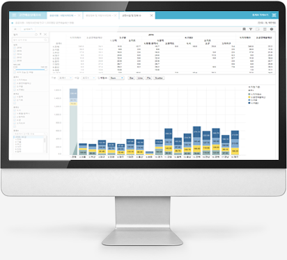

-
통계유형별 최적화된 시각화 서비스, 다양한 CHART 기능 제공,
CHART 간 연동 시각화 기능, 고급 집계함수 및 사용자 정의 함수를 활용하여
고차원 시각화 서비스 기능 제공
- 다양한 데이터 자료형을 수용할 수 있는 확장기반의 메타 저장소 관리
- 통계 입력정보에 대한 시각화 미리보기 서비스 제공
- 통계 관리는 메타정보 기반의 확장 설계
- 통계청 연계 서비스 기능 제공
- 복수 통계 정보 검색 및 조회 기능
- 통계표 구성의 피벗기능 제공
- 통계표 유형별 특성에 맞는 템플릿 디자인 제공
- 통계표 입력 관리를 위한 목표 대비 실적 관리 대쉬보드 기능 제공
- 사용자가 원하는 통계 원천데이터를 수집할 수 있는 MDSS 기능 제공
- 추출 및 집계 자동화 서비스 제공
- 시스템 전반의 활동에 대한 모니터링 및 관리기능